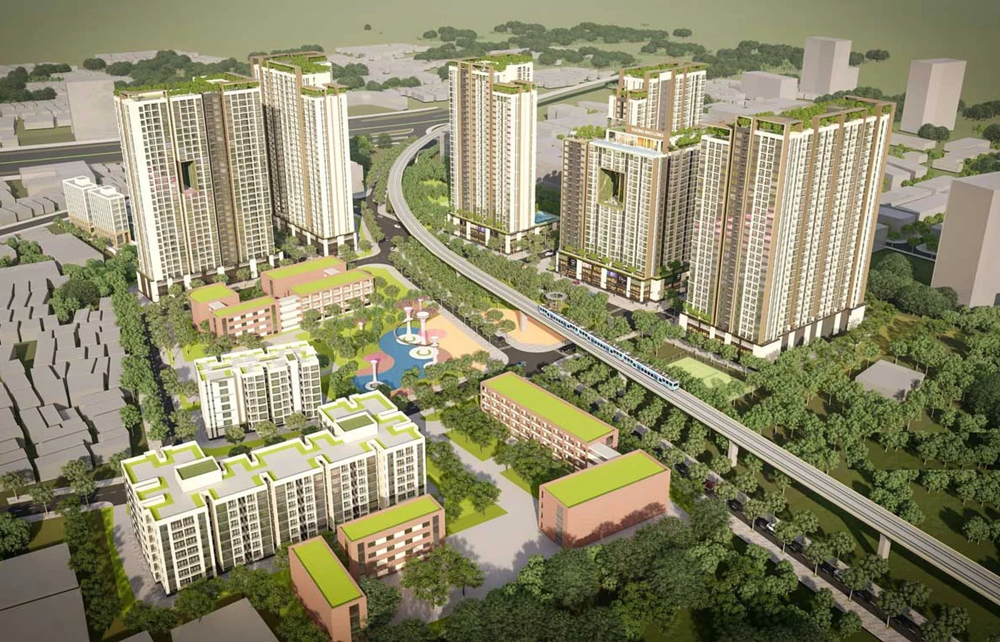
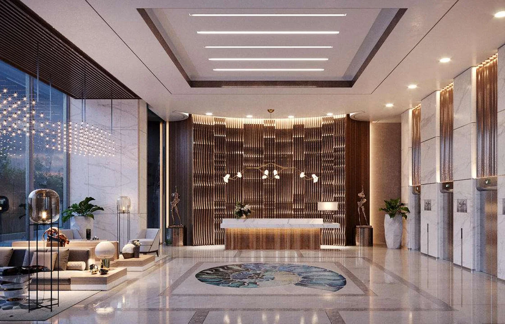
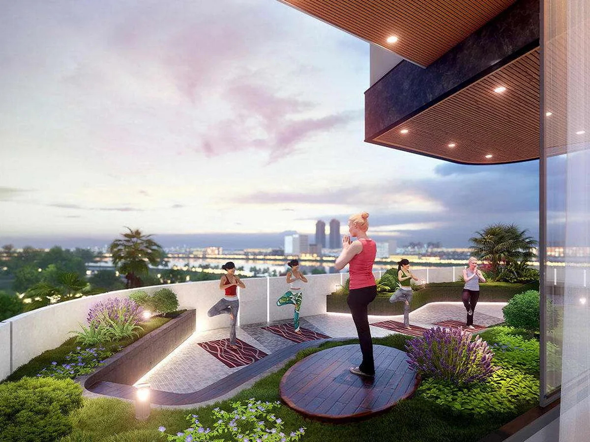
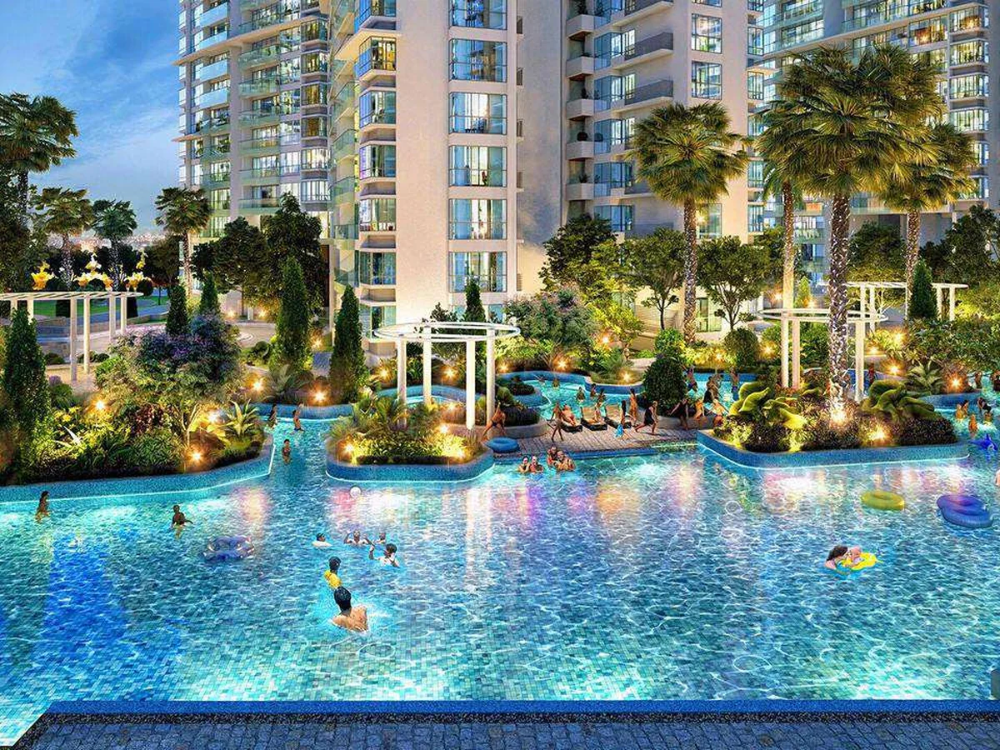

Hồ bơi vô cực tầng cao
Điểm nhấn tạo cảm giác nghỉ dưỡng, đồng thời nâng sức cạnh tranh khi cho thuê nhóm khách hàng chuyên gia.
Opal Luxury Dĩ An | Phân tích bởi KINGMANS Realty
Tọa lạc tại An Bình, Dĩ An, Opal Luxury sở hữu quy mô khoảng 8,68 ha, định hướng 11 block căn hộ, 45+ tiện ích nội khu và lợi thế kết nối về TP.Thủ Đức. KINGMANS giúp bạn bóc tách dự án theo ba lớp: pháp lý, giá trị sử dụng và dòng tiền.
Tổng quan dự án
Opal Luxury thuộc chuỗi thương hiệu Opal của Đất Xanh, hướng đến nhóm khách hàng muốn ở gần TP.HCM nhưng cần không gian sống rộng hơn, tiện ích khép kín hơn và mặt bằng giá dễ tiếp cận hơn so với nhiều khu vực của TP.Thủ Đức.
Với vai trò cố vấn, KINGMANS đánh giá dự án theo ba lớp kiểm định: hồ sơ pháp lý hiện tại, tiến độ triển khai thực tế và khả năng hấp thụ của thị trường Dĩ An trong giai đoạn 2026-2029. Mục tiêu là giúp khách hàng hiểu rõ cơ hội, rủi ro và vùng giá nên cân nhắc trước khi đặt chỗ.

Vị trí chiến lược
Opal Luxury nằm trong vùng lõi Dĩ An, gần Quốc lộ 1A, khu công nghiệp Sóng Thần và các trục di chuyển về TP.Thủ Đức. Đây là khu vực có mật độ cư dân, chuyên gia, kỹ sư và nhóm lao động thu nhập ổn định, tạo nền tảng quan trọng cho cả nhu cầu ở thật lẫn khai thác cho thuê.
Quy hoạch
Điểm cần nhìn ở Opal Luxury không chỉ là số lượng block, mà là cách các tháp căn hộ, tầng đế thương mại, mảng xanh, mặt nước và trục nội khu vận hành cùng nhau. Một dự án có quy hoạch tốt sẽ giúp cư dân sống thuận tiện hơn và giúp tài sản giữ sức hút tốt hơn khi đưa vào khai thác thuê.

Tiện ích resort
Điểm nhấn tạo cảm giác nghỉ dưỡng, đồng thời nâng sức cạnh tranh khi cho thuê nhóm khách hàng chuyên gia.

Không gian đón tiếp chỉn chu giúp nâng tiêu chuẩn vận hành và tạo ấn tượng tốt ngay từ điểm chạm đầu tiên.

Không gian xanh trên cao giúp cân bằng nhịp sống đô thị và giảm cảm giác nén thường gặp ở dự án cao tầng.
Shophouse, cafe, mua sắm và dịch vụ hằng ngày tạo sự thuận tiện cho cư dân, đồng thời tăng tính vận hành của toàn khu.
Sản phẩm
| Loại hình | Diện tích tham khảo | Phù hợp với |
|---|---|---|
| Studio | 35,9 m² | Người độc thân, chuyên gia thuê gần Sóng Thần, nhà đầu tư cần sản phẩm dòng tiền gọn. |
| 1 phòng ngủ | 52 m² | Cặp đôi trẻ, nhân sự quản lý làm việc tại Dĩ An, TP.Thủ Đức hoặc khu công nghiệp lân cận. |
| 2 phòng ngủ | 68 - 71 m² | Gia đình trẻ cần công năng cân bằng giữa diện tích sử dụng, hai phòng ngủ và khả năng khai thác thuê. |
| 3 phòng ngủ | 84 m² | Gia đình nhiều thế hệ, khách hàng ưu tiên căn góc và không gian rộng. |
Giá & dòng tiền
Một số nguồn phân tích và nguồn thị trường đang công bố mức giá tham khảo quanh 40 triệu đồng/m². Với sản phẩm hình thành trong tương lai, người mua nên tính đủ ba kịch bản: thanh toán chuẩn, thanh toán theo tiến độ xây dựng và khoản vay sau khi hết thời gian ưu đãi lãi suất.
Ưu tiên chuẩn bị 25-35% giá trị tài sản để giảm áp lực khi bước sang giai đoạn lãi suất thả nổi.
Tổng gốc và lãi hàng tháng nên nằm dưới 40% thu nhập ròng của hộ gia đình.
So sánh giá thuê với các căn hộ đã bàn giao trong bán kính 3km thay vì chỉ dựa vào cam kết lợi nhuận.
Cập nhật pháp lý Opal Luxury
Một số báo cáo phân tích về Đất Xanh ghi nhận Opal Luxury đã hoàn tất quy hoạch 1/500 và đang xử lý nghĩa vụ tiền sử dụng đất. Tuy nhiên, KINGMANS không xem đây là căn cứ thay thế hồ sơ pháp lý giao dịch. Trước khi đặt chỗ hoặc chuyển cọc, người mua cần yêu cầu bản hồ sơ cập nhật trực tiếp từ đơn vị phân phối và đối chiếu với thông tin của cơ quan quản lý.
Báo cáo KBSV và Vietcap ghi nhận dự án đã có/đã hoàn tất quy hoạch 1/500. Khi làm việc thực tế, cần yêu cầu quyết định phê duyệt, bản vẽ tổng mặt bằng và ranh đất dự án.
Các báo cáo phân tích thể hiện dự án đang trong quá trình xử lý nghĩa vụ tiền sử dụng đất. Nếu chưa có quyết định/chứng từ hoàn tất, không nên xem đây là trạng thái đã xong.
Hiện chưa có thông tin công bố chính thức mà KINGMANS có thể xác nhận về văn bản đủ điều kiện bán nhà ở hình thành trong tương lai. Đây là hồ sơ bắt buộc cần hỏi trước khi ký.
Chưa nên mặc định dự án đã có bảo lãnh cho từng hợp đồng mua bán nếu chưa nhìn thấy thông tin ngân hàng bảo lãnh và mẫu thư bảo lãnh theo từng khách hàng.
So sánh khu vực
Người mua thường hỏi “Opal Luxury có rẻ hơn Thủ Đức không?”. Câu hỏi đúng hơn là: với cùng ngân sách, sản phẩm nào có pháp lý rõ hơn, dòng tiền thuê tốt hơn và tổng chi phí sở hữu hợp lý hơn.
| Tiêu chí | Opal Luxury Dĩ An | Căn hộ đã bàn giao tại Dĩ An | Căn hộ TP.Thủ Đức |
|---|---|---|---|
| Vị trí | An Bình, gần Sóng Thần và trục kết nối TP.Thủ Đức. | Dễ kiểm tra cộng đồng cư dân, tiện ích và mức thuê thực tế. | Lợi thế thương hiệu khu vực mạnh, kết nối nội đô tốt hơn. |
| Pháp lý | Cần kiểm tra 1/500, tiền sử dụng đất, điều kiện mở bán và bảo lãnh ngân hàng. | Ưu tiên dự án đã có sổ hoặc đã vận hành ổn định. | Mỗi dự án khác nhau; cần so sánh hồ sơ, tiến độ và lịch sử chủ đầu tư. |
| Dòng tiền thuê | Có lợi thế từ tệp chuyên gia, kỹ sư và lao động quản lý quanh Sóng Thần. | Dữ liệu thuê dễ kiểm chứng hơn vì đã có căn bàn giao thật. | Giá thuê cao hơn nhưng giá mua và chi phí sở hữu cũng cao hơn. |
| Biên an toàn | Phù hợp nếu giá vào đủ cạnh tranh và pháp lý được xác nhận bằng văn bản. | Biên an toàn đến từ dòng tiền hiện hữu và khả năng kiểm tra thực tế. | Biên an toàn phụ thuộc nhiều vào giá mua ban đầu và khả năng nắm giữ dài hạn. |
Có nên mua Opal Luxury không?
Nhóm mua ở nên ưu tiên căn có hướng thoáng, mặt bằng dễ sử dụng, tiện ích phù hợp nhịp sống gia đình và chi phí quản lý rõ ràng. Pháp lý và thời điểm bàn giao là hai điểm phải kiểm chứng trước tiên.
Nhà đầu tư cần so sánh giá thuê tại các dự án đã bàn giao ở Dĩ An, Sóng Thần và giáp TP.Thủ Đức. Căn diện tích vừa, dễ nội thất hóa và tổng giá trị thấp thường có thanh khoản thuê tốt hơn.
Nhóm mua giữ tài sản cần nhìn vào tốc độ đô thị hóa Dĩ An, kết nối TP.HCM, khả năng tái định giá sau khi pháp lý và tiến độ rõ hơn. Không nên dùng đòn bẩy quá cao ở giai đoạn chờ bàn giao.
Hình ảnh dự án

Câu hỏi thường gặp
Dự án có thể phù hợp cả hai nhóm, nhưng chiến lược chọn căn sẽ khác nhau. Mua để ở cần ưu tiên tầng, hướng, tiện ích và môi trường sống; mua đầu tư cần ưu tiên diện tích dễ thuê, giá vào, lịch thanh toán và biên độ so sánh với dự án đã bàn giao gần đó.
Chỉ nên giữ chỗ khi đã hiểu rõ điều kiện hoàn tiền, thời hạn chuyển cọc, hồ sơ pháp lý được cung cấp và kịch bản tài chính cá nhân. Không nên đặt tiền chỉ vì tâm lý khan hàng hoặc ưu đãi chưa được thể hiện bằng văn bản.
Nếu vùng giá quanh 40 triệu đồng/m² được xác nhận theo từng đợt bán, Opal Luxury cần được so sánh trực tiếp với các dự án Dĩ An và TP.Thủ Đức về pháp lý, tiến độ, tiện ích và chất lượng vận hành. Ngoài giá/m², cần cộng thêm lãi vay, nội thất, phí quản lý và thời gian chờ bàn giao để thấy tổng chi phí thật.
KINGMANS hỗ trợ lọc mã căn, bóc tách pháp lý, lập bảng dòng tiền, so sánh mặt bằng giá khu vực và chuẩn bị checklist câu hỏi trước khi khách hàng làm việc với bộ phận bán hàng.
Nhận tư vấn riêng
Bạn sẽ nhận được bảng kiểm tra nhanh gồm: loại căn phù hợp, dòng tiền 5 năm, điểm pháp lý cần hỏi, mức giá nên so sánh và phương án vốn phù hợp trong khu vực Dĩ An.